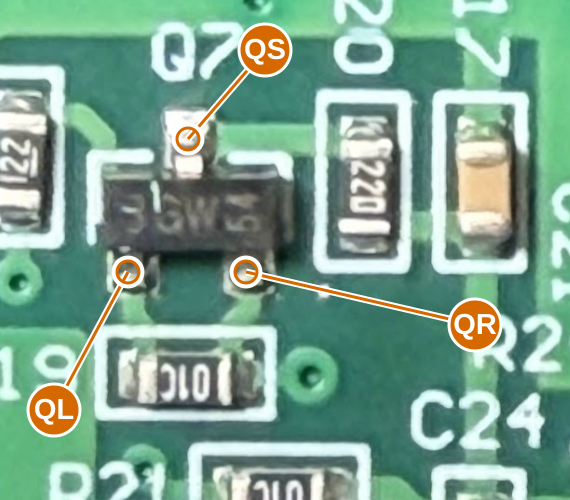

DISCONNECT BATTERY AND PROGRAMMER. Let supply capacitors discharge. Select DIODE TEST (volts, not resistance); leave Q7 fitted.
B67 red QR / black QL; B68 red QL / black QR; B69 red QS / black QL; B70 red QL / black QS. Report volts or OL for each; say changing if unsettled.
Q7 junction check: physical contacts, not assumed pin roles

QL: Q7 lower-left contact. Confirmed to R19 left end at 1.5 ohm. Candidate base only; use the label, not an assumed terminal role.
QR: Q7 lower-right contact. Confirmed to R19 right end at 1.5 ohm. Candidate emitter only.
QS: Q7 single upper contact, toward R20. Candidate collector only.
ID
Red probe
Black probe
Condition
Reading
B67
QR
QL
Unpowered
B68
QL
QR
Unpowered
B69
QS
QL
Unpowered
B70
QL
QS
Unpowered
The two 1.5 ohm results confirm the existing joins. These four diode readings test the PNP candidate against the surprising 0/4.5 V result. Parallel board paths can affect diode mode: readings do not by themselves establish an exact part or prove failure. No previous continuity or powered reading is repeated.
Copy results
Worksheet only; nothing is sent automatically. Copy before closing.
What follows
Resolve hidden paths and device behavior - S1 contacts and the front capacitor-bank ANT2 connection are established. Q3 stays fitted with identification deferred. Two local-only PIC branches, candidate device roles and powered behavior remain.
Recover critical component values - 44 ceramic values; prioritize tuning and receiver after topology.
Finish interface and package mapping - LED colour branches and J5 board-contact/output mapping are established. LED footprint, connector fit and external motor harness orientation remain reproduction qualifications.
ERC: 1 retained U6/U6A output conflict. U6A is DNP; its regulator symbol remains by your request. Other source and library findings are resolved.